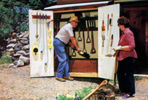

Caring for garden tools in three steps: [1] Caked earth is removed with a wooden scraper. [2] The implement is scrubbed clean in the barrel bin with a brush. [3] The tool is plunged into a mixture of sand and vegetable oil to prevent rust.